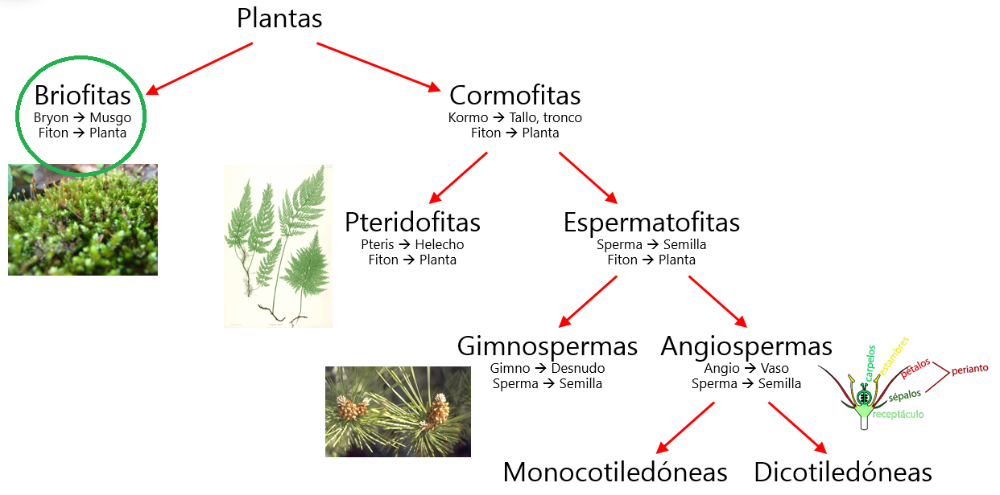

TAXONOMÍA VEGETAL
Concepto
La Taxonomía es la parte de La biología que se ocupa de la clasificación u ordenación de los organismos, así como normas que regulan dicha clasificación. Las plantas se ordenan en distintos grupos o categorías taxonómicas de acuerdo con las afinidades que presentan. Las divisiones taxonómicas son: reino, división, clase, orden, familia, género y especie.
| Pino Canario | Manzano | |
|---|---|---|
| REINO: | Plantae | Plantae |
| DIVISIÓN: | Pinophyta | Magnoliophyta |
| CLASE: | Pinopsida | Magnoliopsida |
| ORDEN: | Pinales | Rosales |
| FAMILIA: | Pinaceae | Rosaceae |
| GÉNERO: | Pinus | Malus |
| ESPECIE: | Pinus canariensis C.Sm | Malus domestica Borkh |
Table: Ordenación de plantas

La especie se nombra utilizando la nomenclatura binomial que es un nombre latín que se escribe en cursiva y consta de dos partes, el primero es el género y el segundo la especie. Los nombres científicos siempre se escriben en latín y en cursiva.
Clasificación de las plantas
La clasificación de las especies desde un punto de vista morfológico es:

-
BRIOFITAS: tienen aparato vegetativo con organización de alga, tejidos y vasos son rudimentarios.
-
CORMOFITAS O TRAQUEOFITAS: Son plantas vasculares, tienen vasos por donde circula la savia bruta y la savia elaborada. Se clasifican en: Vídeo
-
CRIPTÓGAMAS, ESPORAFITAS O PTERIDOFITAS: son plantas que no tienen semillas, flores ni frutos y se reproducen por esporas. Por ejemplo helechos. Helecho
-
FANERÓGAMAS O ESPERMATOFITAS: son plantas que tienen flores. Es el grupo de plantas más evolucionado y el más importante para el ser humano. Se clasifican en: .
-
Gimnospermas: árboles o arbustos con hojas en forma de agujas o escamas, son perennes. No producen verdades flores, por lo tanto no producen frutos. Son siempre plantas leñosas. Ej. pino, abeto, ciprés, enebro
-
Angiospermas: plantas que pueden ser herbáceas o leñosas con hojas anchas, semillas, flores y frutos. Éstas se dividen en dos clases:
- Monocotiledóneas: la semilla tiene un solo cotiledón: cebolla, arroz, maíz...
- Dicotiledóneas: la semilla tiene dos cotiledones (primeras hojas del embrión): manzana, tomate, naranja...
-